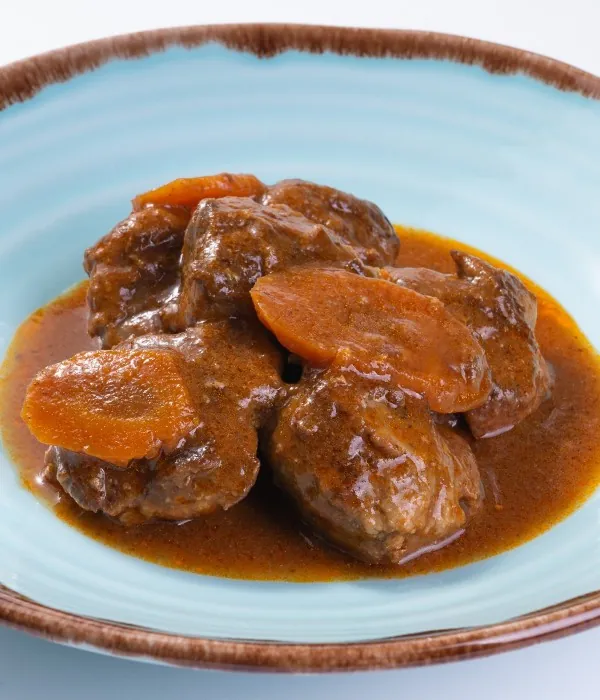

Carrillada de Cerdo al Vino de Jerez

Un plato tradicional y meloso, guisado lentamente con un toque único de vino de Jerez.
Ingredientes
- 1 kg de carrilladas de cerdo limpias
- 1 cebolla grande
- 2 zanahorias
- 1 pimiento rojo
- 2 dientes de ajo
- 200 ml de vino de Jerez (Oloroso o Pedro Ximénez)
- 500 ml de caldo de carne
- Aceite de oliva, sal y pimienta negra
Pasos
- Sazona las carrilladas con sal y pimienta, y séllalas en una olla con aceite caliente. Retíralas y resérvalas.
- En el mismo aceite, pica y pocha la cebolla, los ajos, el pimiento y las zanahorias a fuego medio.
- Vuelve a incorporar las carrilladas a la olla y vierte el vino de Jerez. Deja reducir 5 minutos para que se evapore el alcohol.
- Añade el caldo de carne, tapa la olla y cocina a fuego lento durante 1 hora y media (o 30 minutos si usas olla exprés).
- Cuando la carne esté tierna, retírala y tritura las verduras para hacer la salsa.
- Junta de nuevo la carne con la salsa triturada, cocina 5 minutos más y sirve bien caliente.
Descargar receta en PDF